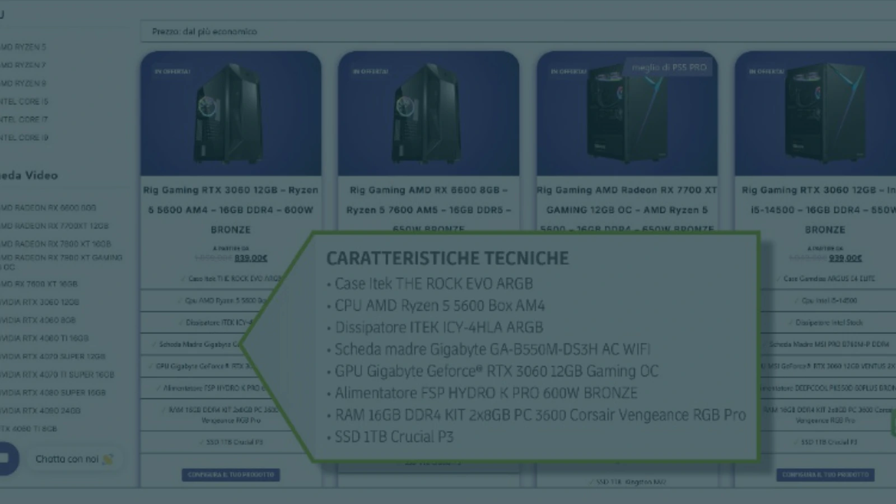
Testo e fonti · Interno del PC
UNITÀ 3 · HARDWARE
Interno del PC
CPU, memorie e motherboard
prof. Andrea Accordino
pp. 42–49
Fonte: Barbero, Vaschetto, Rolfo, Dal BIT all’INTELLIGENZA ARTIFICIALE, Sanoma/Linx, Unità 3, pp. 42–49. Riferimento iconografico: p. 42, Figura 1, come riferimento per l’illustrazione IA. Illustrazioni generate con IA dal docente, prendendo spunto dal manuale; dichiarazione docente del 2026-10-07.
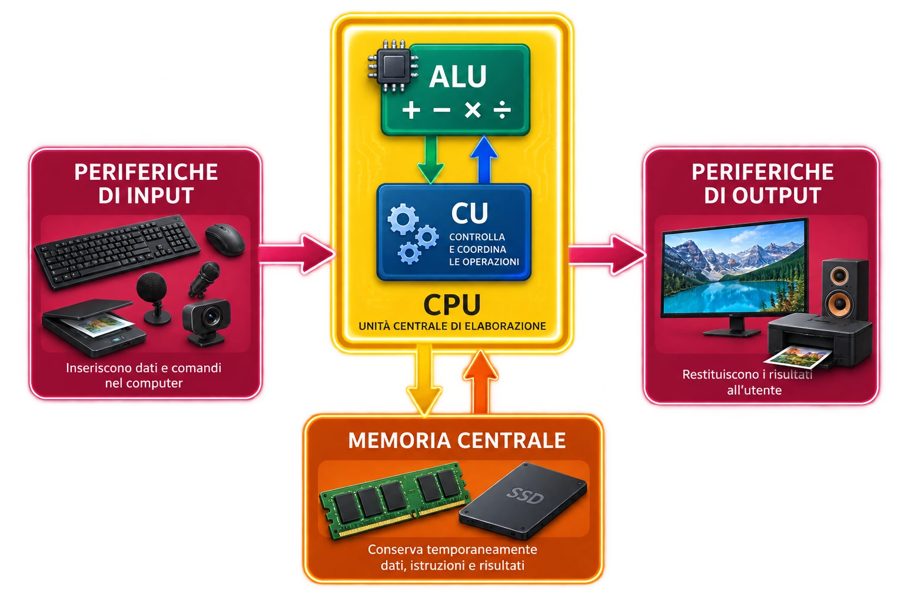
Testo e fonti · Il modello di von Neumann
INTERNO DEL PC
Il modello di von Neumann
2
pp. 42–43
Un computer può essere descritto con pochi blocchi funzionali collegati tra loro.
CPU
esegue istruzioni, calcoli e coordina
MEMORIA
contiene programma e dati in uso
INPUT / OUTPUT
inserisce dati e restituisce risultati
BUS · fa comunicare e sincronizzare gli altri blocchi
Pensavate che “computer” significasse solo accenderlo?
Fonte: pp. 42–43, modello logico-funzionale di von Neumann e descrizione di CPU, memoria centrale, periferiche di input/output e bus. Riferimento iconografico: p. 42, Figura 2, usata come riferimento concettuale per frecce e relazioni. Illustrazioni generate con IA dal docente, prendendo spunto dal manuale; dichiarazione docente del 2026-10-07.
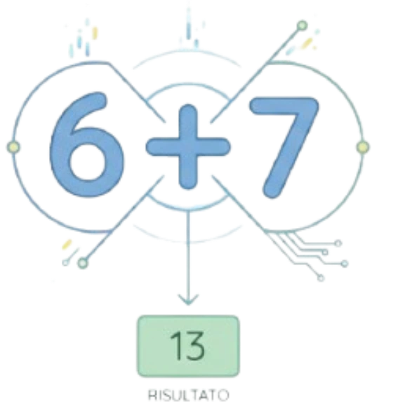
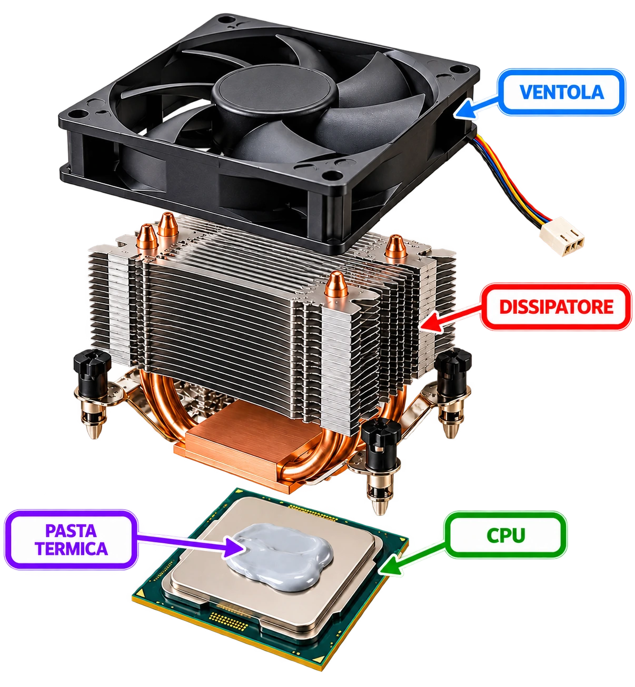
Testo e fonti · Dentro la CPU: ALU e CU
INTERNO DEL PC
Dentro la CPU: ALU e CU
3
pp. 43–44
CPU
Esegue le istruzioni del programma, svolge calcoli e coordina le attività dei dispositivi collegati al sistema.
ALU Esegue operazioni aritmetiche e logiche.
CU Unità di Controllo. Recupera le istruzioni e coordina l’esecuzione.
ALU elabora · CU controlla
Fonte: pp. 43–44. La CPU corrisponde fisicamente al microprocessore; ALU = elaborazione logico-matematica, CU = controllo e sincronizzazione. Riferimento iconografico: p. 43, Figura 3. Illustrazioni generate con IA dal docente, prendendo spunto dal manuale; dichiarazione docente del 2026-10-07.
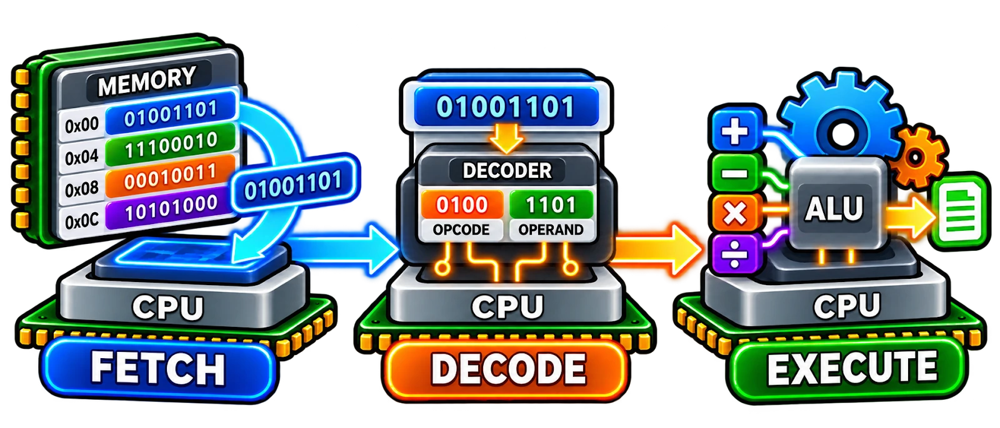
Testo e fonti · Come lavora la CPU
INTERNO DEL PC
Come lavora la CPU
4
p. 44
Il ciclo fetch-decode-execute
FETCH La CU legge l’istruzione da eseguire.
1
DECODE L’istruzione letta viene interpretata.
2
EXECUTE L’istruzione letta viene eseguita.
3
→
→
Fonte: p. 44. Ciclo di istruzione fetch → decode → execute; registri interni, clock e core come elementi che concorrono al funzionamento della CPU. Illustrazioni generate con IA dal docente, prendendo spunto dal manuale; dichiarazione docente del 2026-10-07.
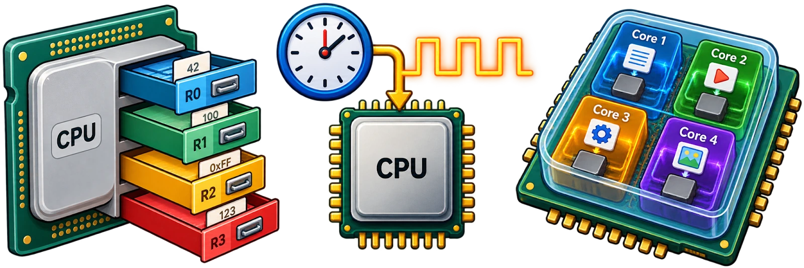
Testo e fonti · Cosa contiene la CPU
INTERNO DEL PC
Cosa contiene la CPU
4
p. 44
REGISTRI Piccole memorie interne alla CPU: conservano temporaneamente operandi, risultati e riferimenti.
CLOCK Segnale periodico che sincronizza le operazioni. La frequenza si misura in hertz (Hz).
CORE Nuclei di elaborazione capaci di eseguire istruzioni anche in parallelo.
Fonte: p. 44. Ciclo di istruzione fetch → decode → execute; registri interni, clock e core come elementi che concorrono al funzionamento della CPU. Illustrazioni generate con IA dal docente, prendendo spunto dal manuale; dichiarazione docente del 2026-10-07.
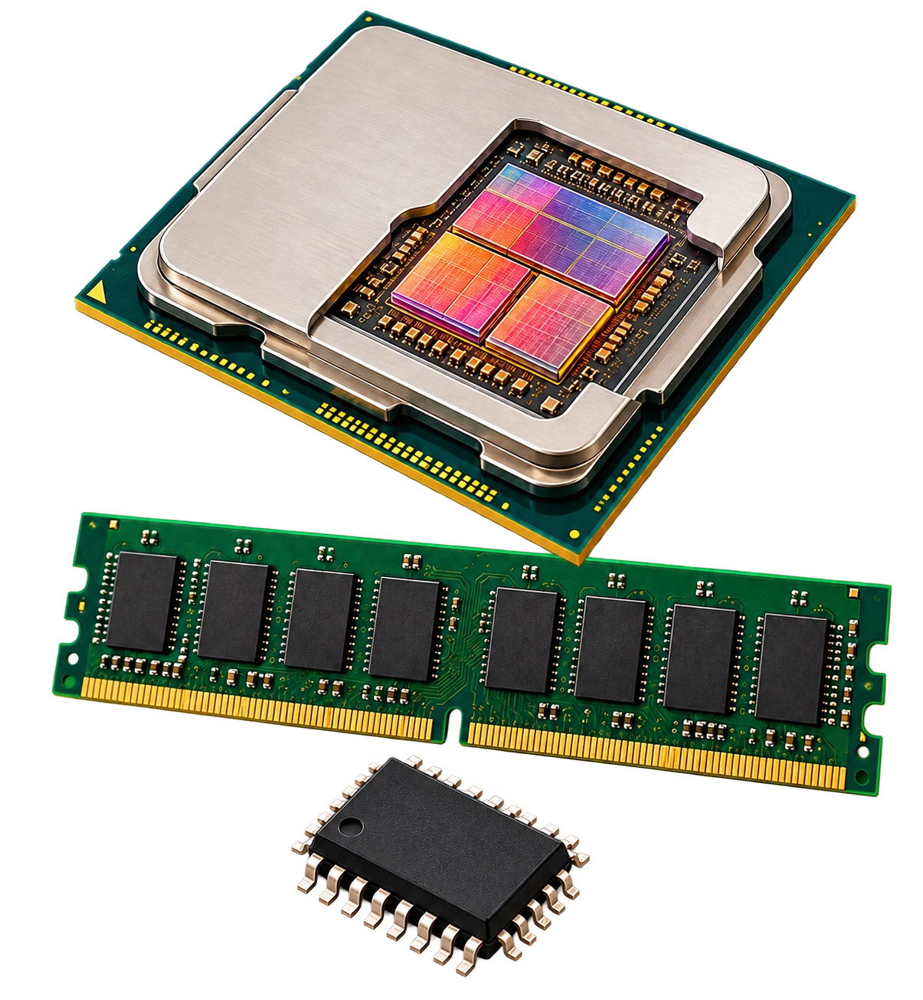
Testo e fonti · Cache, RAM e ROM
INTERNO DEL PC
Cache, RAM e ROM
5
pp. 44–45
Tre memorie, tre ruoli
CACHE
Sta dentro la CPU, è molto piccola ma molto veloce. Conserva temporaneamente dati e istruzioni che serviranno a breve alla CPU.
RAM
Contiene programmi e dati in uso. Permette lettura e scrittura ed è volatile.
ROM
Memoria permanente, normalmente di sola lettura. Conserva il BIOS anche senza alimentazione.
MEMORIE VOLATILI!!! perdono il contenuto quando manca l’alimentazione
Fonte: pp. 44–45. Confronto tra cache, RAM e ROM; volatilità della RAM e permanenza della ROM; BIOS nella ROM. Riferimento iconografico: p. 45, Figura 4. Illustrazioni generate con IA dal docente, prendendo spunto dal manuale; dichiarazione docente del 2026-10-07.
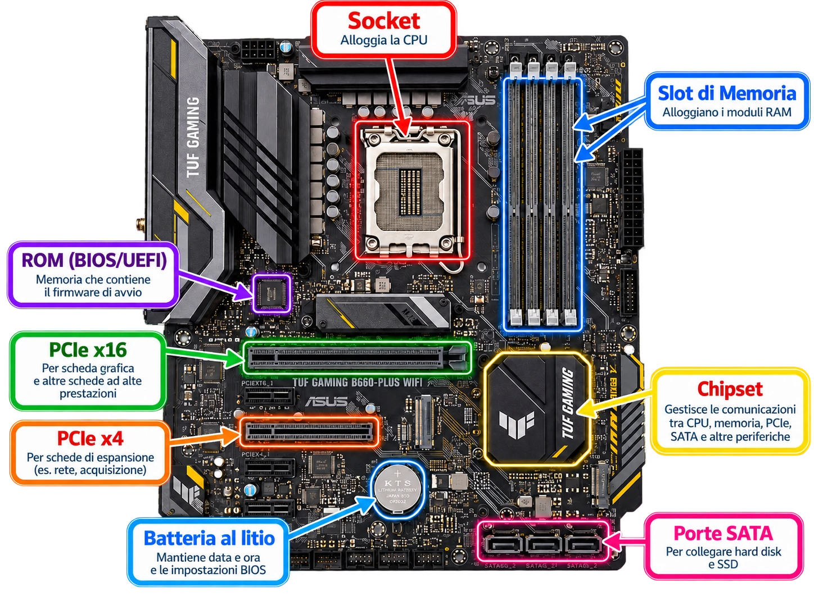
Testo e fonti · Motherboard: i componenti principali
INTERNO DEL PC
Motherboard: i componenti principali
p. 46
La motherboard è la scheda principale del computer. In questa immagine puoi seguire le frecce e riconoscere i componenti indicati nel libro.
SOCKET — Alloggia la CPU SLOT DI MEMORIA — Alloggiano i moduli RAM ROM (BIOS/UEFI) — Contiene firmware di avvio PCI Express X4 — Collega schede di espansione PCI Express X16 — Collega schede ad alte prestazioni CHIPSET — Coordina comunicazioni tra componenti PORTE SATA — Collegano dischi e SSD BATTERIA AL LITIO — Mantiene impostazioni e orologio
6
Fonte: p. 46. Motherboard con ROM, slot PCI Express, chipset, batteria e SATA. L’illustrazione IA è mostrata integralmente e ingrandita per rendere leggibili frecce ed etichette. Illustrazioni generate con IA dal docente, prendendo spunto dal manuale; dichiarazione docente del 2026-10-07.
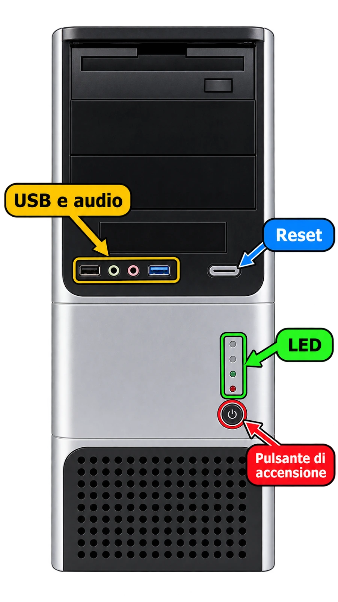
Testo e fonti · Il case: cosa troviamo sul frontale
INTERNO DEL PC
Il case: cosa troviamo sul frontale
8
p. 48
Il case contiene e protegge i componenti interni. Sul pannello frontale troviamo i comandi e le connessioni usate più spesso.
Pulsante di accensione avvia il computer Reset riavvia il sistema senza togliere l’alimentazione USB e audio collegano periferiche, cuffie e microfono LED segnalano lo stato del sistema e dell’unità di memoria
Fonte: p. 48. Parte frontale del case con pulsanti, LED, porte USB e audio. Immagine mostrata integralmente e ingrandita. Illustrazioni generate con IA dal docente, prendendo spunto dal manuale; dichiarazione docente del 2026-10-07.
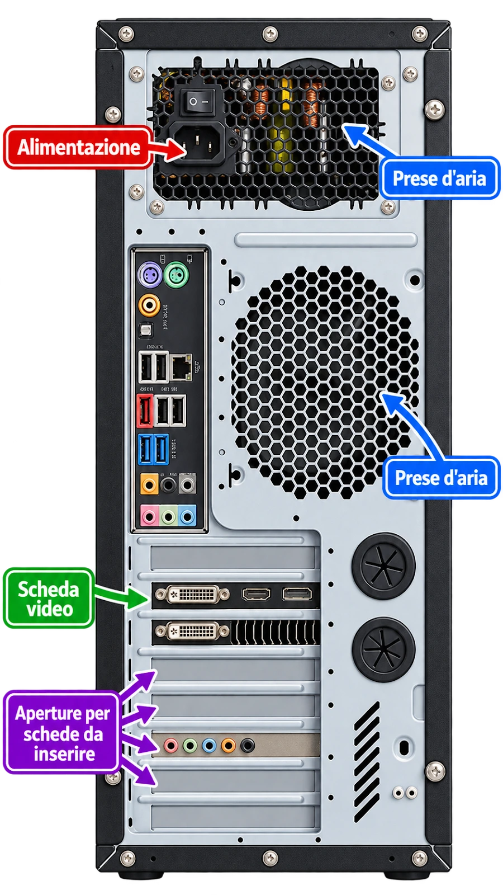
Testo e fonti · Retro del case, raffreddamento e GPU
INTERNO DEL PC
Retro del case, raffreddamento e GPU
9
p. 49
Sul retro del case si vedono collegamenti, alimentazione e aperture necessarie per schede aggiuntive e raffreddamento.
RAFFREDDAMENTO Prese d’aria e ventole devono garantire un flusso continuo. Troppo calore può causare malfunzionamenti o danni.
SCHEDA GRAFICA Una scheda dedicata possiede una GPU per l’elaborazione grafica e una propria memoria video VRAM.
Fonte: p. 49. Parte posteriore del case, alimentatore, pannello I/O, scheda video e prese d’aria. Illustrazione IA mostrata integralmente e ingrandita. Illustrazioni generate con IA dal docente, prendendo spunto dal manuale; dichiarazione docente del 2026-10-07.
| 1 — DisplayPort | Uscita video digitale | 2 — HDMI | Audio e video digitale |
| 3a — USB-A 2.0 | Periferiche e dati | 3b — USB-C | Dati e alimentazione |
| 3c — USB-A 3.0 | Trasferimento dati veloce | 4 — Ethernet (RJ-45) | Collegamento alla rete |
| 5a — Line In | Ingresso audio | 5a — Mic In | Ingresso microfono |
| 5b — S/PDIF Out | Uscita audio digitale | 5c — Line Out | Uscita audio principale |
| 5c — Rear | Altoparlanti posteriori | 5c — C/Sub | Centrale e subwoofer |
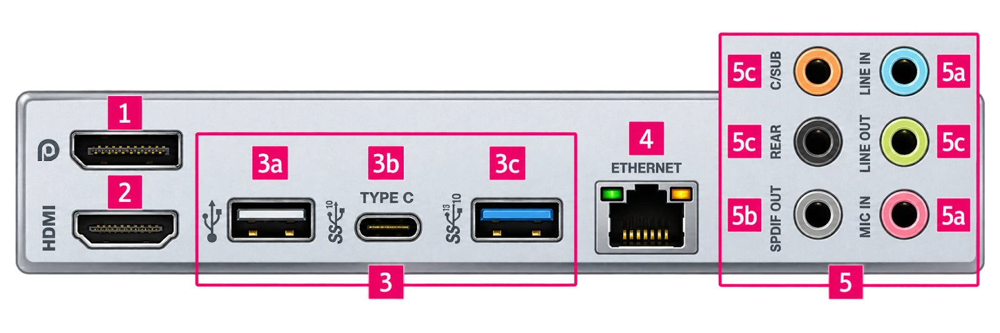
Testo e fonti · Retro del case, le porte
INTERNO DEL PC
Retro del case, le porte
9
p. 49
| 1 — DisplayPort | Uscita video digitale | 2 — HDMI | Audio e video digitale |
| 3a — USB-A 2.0 | Periferiche e dati | 3b — USB-C | Dati e alimentazione |
| 3c — USB-A 3.0 | Trasferimento dati veloce | 4 — Ethernet (RJ-45) | Collegamento alla rete |
| 5a — Line In | Ingresso audio | 5a — Mic In | Ingresso microfono |
| 5b — S/PDIF Out | Uscita audio digitale | 5c — Line Out | Uscita audio principale |
| 5c — Rear | Altoparlanti posteriori | 5c — C/Sub | Centrale e subwoofer |
Fonte: p. 49. Parte posteriore del case, alimentatore, pannello I/O, scheda video e prese d’aria. Illustrazione IA mostrata integralmente e ingrandita. Illustrazioni generate con IA dal docente, prendendo spunto dal manuale; dichiarazione docente del 2026-10-07.
Testo e fonti · Dentro il PC
ORA TOCCA A VOI
Dentro il PC
Usa ciò che hai appena visto per riconoscere componenti, funzioni e relazioni.
1
OSSERVA
individua blocchi e componenti nelle immagini
2
COLLEGA
associa ALU, CU, registri e memorie alla funzione
3
RICOSTRUISCI
ordina fetch → decode → execute
NON CERCARE IL NOME.
Cerca gli indizi: posizione · forma · funzione
Apri l’attività AccorTIC
Transizione all’attività AccorTIC basata sui contenuti delle pp. 42–49. Le illustrazioni IA sono state utilizzate nelle slide precedenti come parte della spiegazione, non come elementi decorativi. Illustrazioni generate con IA dal docente, prendendo spunto dal manuale; dichiarazione docente del 2026-10-07.